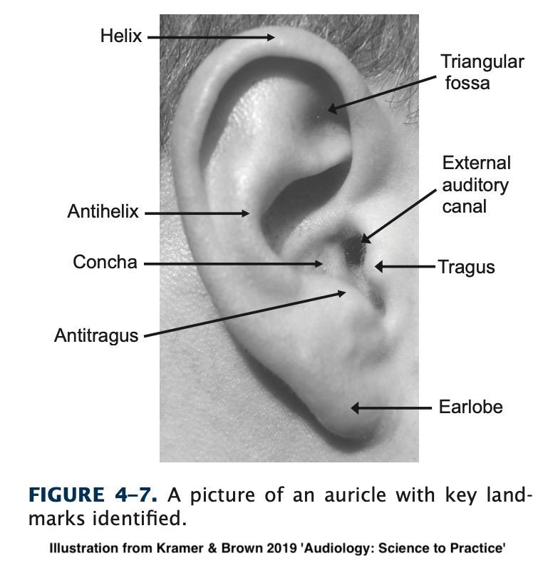
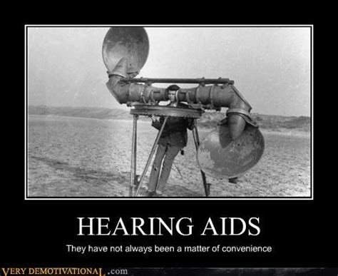
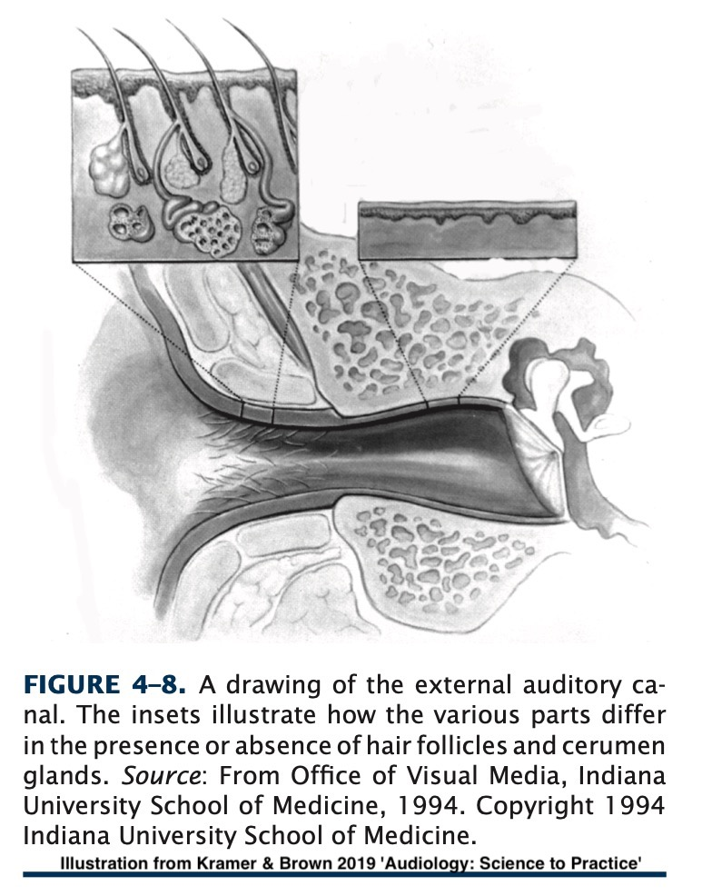
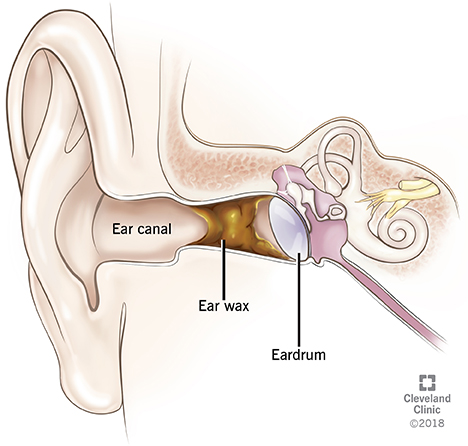
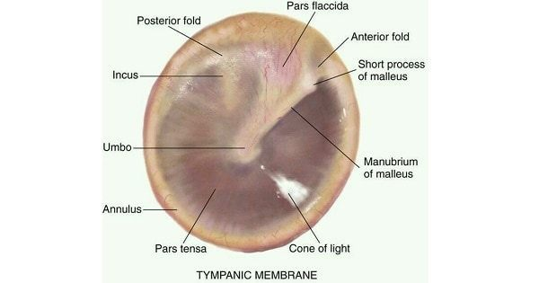

Will Styler - LIGN 113
Questions about the Reading?
‘Transduction’
Overview of the Structures of the Ear
The Pinna
The Ear Canal
The Tympanic Membrane
Microphones
Speakers
Seismographs
Thermometers
What else?
Transducing air pressure to mechanical pressure
Transducing mechanical movements to neural signals
Transducing neural signals into a model of the world
Thinking about transduction will help you all quarter!
Energy is often lost
The signal is often distorted subtly
Sometimes parts of the signal are discarded entirely
“What is being lost?” is another valuable question to ask!
The ‘Outer Ear’
The ‘Middle Ear’
The ‘Inner Ear’

The Pinna, Ear Canal, and Typmpanic Membrane
Offers protection of the sensitive bits
Provides Amplification
Helps with localization
The Ossicular Chain, the Eustachian tube, and the surrounding space
Provides transduction from air to mechanical movement
Provides pressure regulation
Provides limited protection via the Acoustic Reflexes
The Semicircular Canals, Cochlea, and Auditory Nerve
Provides perception of orientation and motion
Provides transduction from physical vibration to neural signals
Outer, middle, inner
… and today, we’re starting with the outer ear!

Also called the Auricle
The external apparatus of the ear
Serves to protect the ear canal
Helps with localization of sound
Helps amplify sounds
Against pressure seals
Against rain and water
Against wind

Front vs. Back
Up vs down

Amplification is strongest around 3000Hz
This is our first distortion step in hearing
… to make a pinna colada
üòÇüòÇüòÇüòÇüòÇ
A long tube for air to travel into the skull
Contains hairs, cerumen glands
Around 1” long, 0.25” in diameter in adults
Cartilaginous portion contains hairs and cerumen glands
Bony portion has none

Cerumen lubricates, cleans, and protects the ear canal
Naturally ‘pumped’ out of the ear with chewing and jaw movement
Should exit the ear naturally at the pinna
People produce two different types of cerumen!
The ABCC11 gene controls your earwax type
Wet wax (AA Genotype) is common in European and African folks
Dry-Flaky wax (GA/GG) is common in East Asian and Indigenous American folks

… and it’s really easy to treat!
There are even at-home kits
Do not stick things into your ears to ‘dig it out’
Not enough suction
Nothing is removed
There are no proven health benefits
At best, you’re getting ripped off

(Although, actually, both can be removed by flushing the area with water…)

Blocks water and debris from entering the middle ear
Partially transparent, made up of layers
Captures sound vibrations, transmitting them into the ossicular chain

Stops things from going into the middle ear
Allows water to fill the outer ear without filling the middle ear
Drums with holes have problems…
One other issue we’ll discuss later!
People can still hear with holes or perforations
Causes some troubles, but can be done therapeutically
It can be rebuilt!
… but generally, you want that seal!
It moves with air pressure variations
… and transduces them into bone movement
More on those bones next time!
The Auditory system is all about transduction
The Ear is divided into Outer, Middle, and Inner areas
The Outer Ear has the Pinna, Ear Canal, and TM
… and combined, they protect, amplify and transmit!